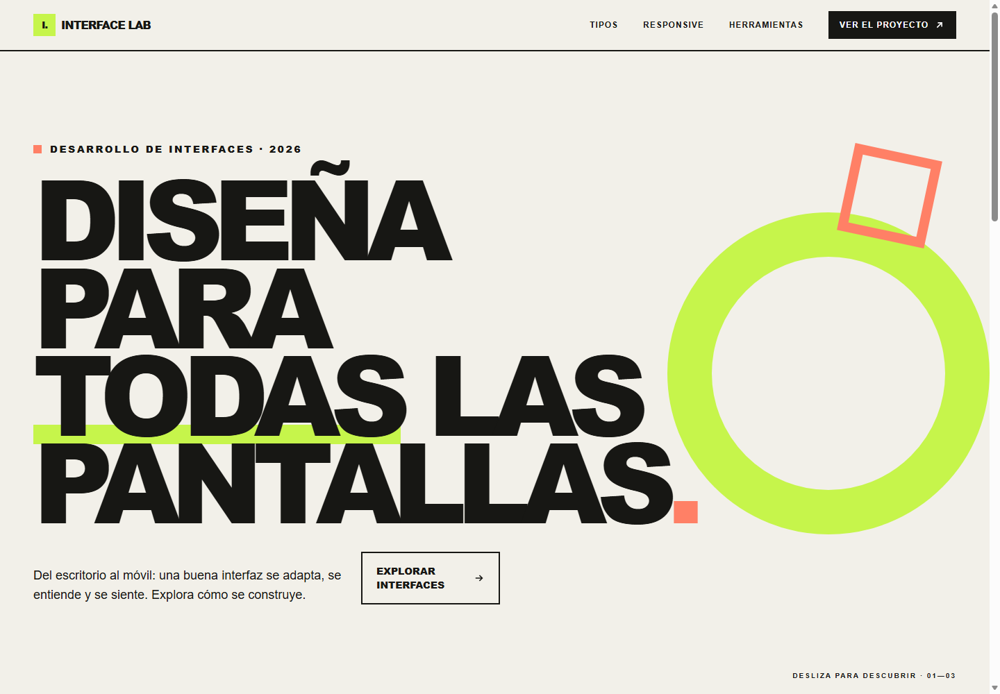
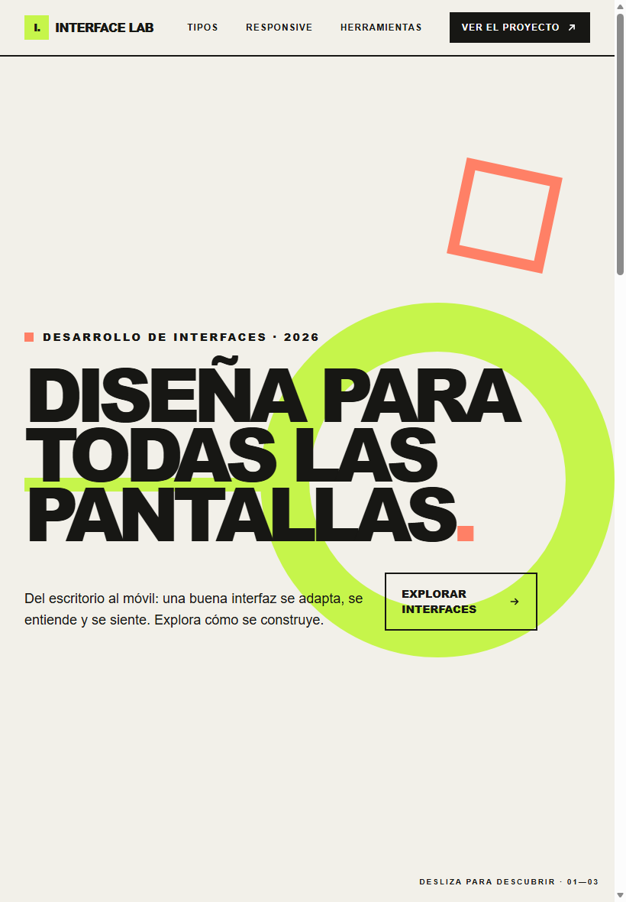
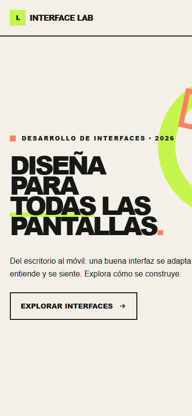

01 / Tipos
Escritorio con Java/Python; móvil nativo con Android/iOS; web e híbridas con HTML y React.
Entrega / React + Tailwind CSS
Una landing educativa, brutalista y responsive para explorar interfaces de escritorio, aplicaciones nativas y experiencias web/híbridas.
Escritorio con Java/Python; móvil nativo con Android/iOS; web e híbridas con HTML y React.
Prototipado en Figma/Adobe XD y estilos CSS/Sass con referencias a Bootstrap y Tailwind.
Menú móvil, navegación por anclas, botones de vista responsive y estados hover/focus.
TecnologíasReact · TypeScript · Vite · Tailwind CSS
ComposiciónBrutalismo · bloques tipográficos · color de acento
ResponsiveBreakpoints Tailwind · rejillas adaptables · menú móvil
Viewportmin-height: calc(100svh - 73px)
En escritorio, la navegación se expande y las tarjetas se distribuyen en tres columnas.

La portada ocupa el alto visible del viewport; los enlaces permiten recorrer las secciones.
La rejilla y la navegación cambian para priorizar legibilidad y uso táctil.


100svh, scroll suave y preferencia de movimiento reducido.Incluye vercel.json (Vite, npm run build, salida dist) y guía en README. La publicación no se ha ejecutado: este entorno no tiene sesión/cuenta Vercel ni repositorio remoto configurado.
interface-lab-react-tailwind a un repositorio Git y conéctalo desde vercel.com/new.interface-lab-react-tailwind como Root Directory.npm run build y Output Directory dist; pulsa Deploy.Verificación local: npm run build — compilación de producción correcta.